Round 4 revisions (Haiku-free, lead-drawn; PROPOSED concept art, not production)

hair-bandana-v2 (replaces the blob)

hair-bonnet-night-v2

beanie, pencil behind head, tip up and right

beanie, pencil tucked under the cuff

overalls, pencil in bib pocket

paint overalls, pencil in bib pocket